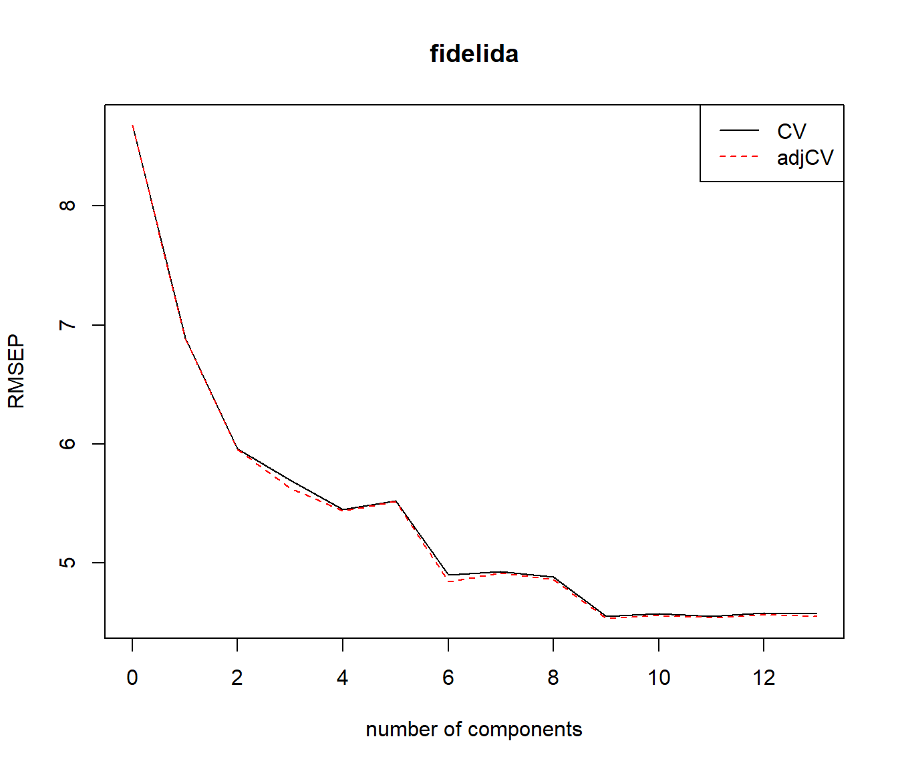
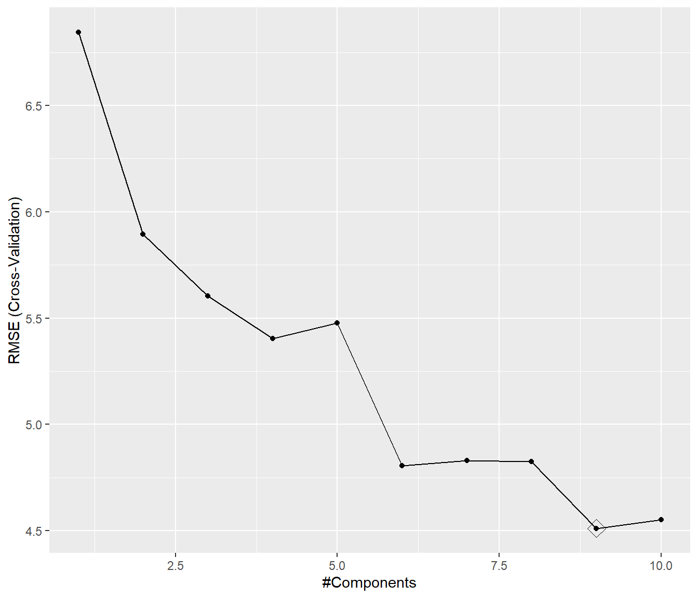
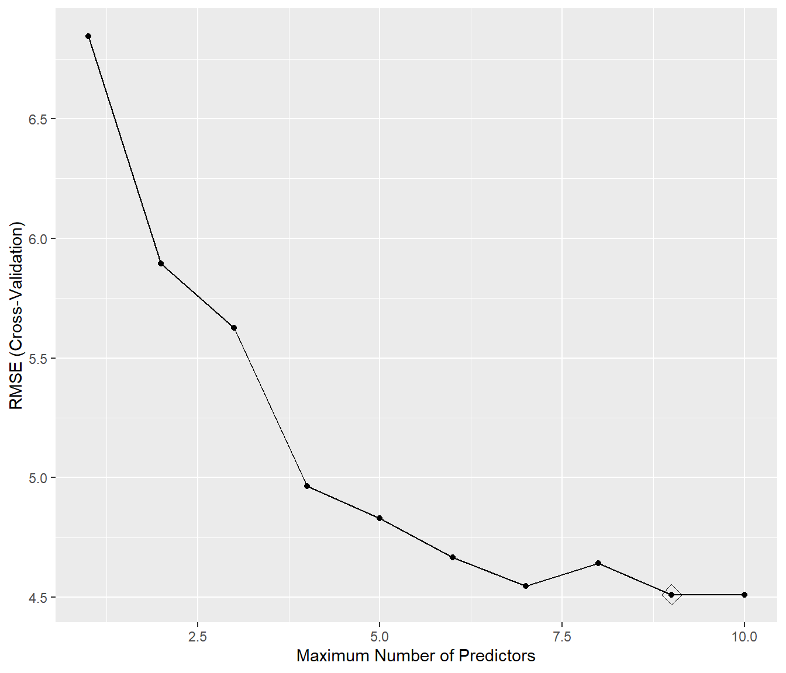
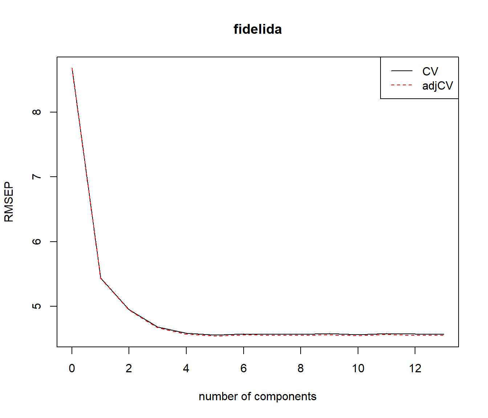
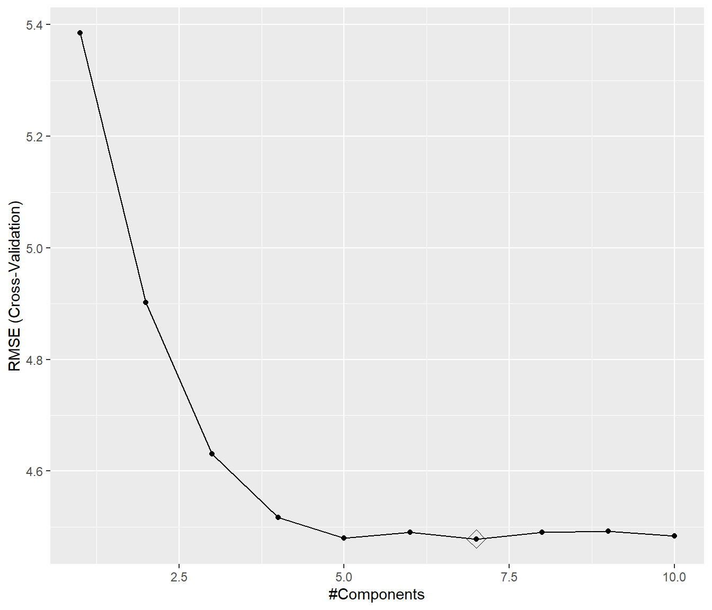

6.7 Métodos de reducción de la dimensión
Otra alternativa, para tratar de reducir la varianza de los modelos lineales, es transformar los predictores considerando \(k < p\) combinaciones lineales: \[Z_j = a_{1j}X_{1} + a_{2j}X_{2} + \ldots + a_{pj}X_{p}\] con \(j = 1, \ldots, k\), denominadas componentes (o variables latentes), y posteriormente ajustar un modelo de regresión lineal empleándolas como nuevos predictores: \[Y = \alpha_0 + \alpha_1 Z_1 + \ldots + \alpha_k Z_k + \varepsilon\]
Adicionalmente, si se seleccionan los coeficientes \(a_{ji}\) (denominados cargas o pesos) de forma que \[\sum_{i=1}^p a_{ij}a_{il} = 0, \text{ si } j \neq l,\] las componentes serán ortogonales y se evitarán posibles problemas de multicolinealidad. De esta forma se reduce la dimensión del problema, pasando de \(p + 1\) a \(k + 1\) coeficientes a estimar, lo cual en principio reducirá la varianza, especialmente si \(p\) es grande en comparación con \(n\). Por otra parte, también podríamos expresar el modelo final en función de los predictores originales, con coeficientes: \[\beta_i = \sum_{j=1}^k \alpha_j a_{ij}\] Es decir, se ajusta un modelo lineal con restricciones, lo que en principio incrementará el sesgo (si \(k = p\) sería equivalente a ajustar un modelo lineal sin restricciones). Además, podríamos interpretar los coeficientes \(\alpha_j\) como los efectos de las componentes del modo tradicional, pero resultaría más complicado interpretar los efectos de los predictores originales.
También hay que tener en cuenta que al considerar combinaciones lineales, si las hipótesis estructurales de linealidad, homocedasticidad, normalidad o independencia no son asumibles en el modelo original, es de esperar que tampoco lo sean en el modelo transformado (se podrían emplear las herramientas descritas en la Sección 6.4 para su análisis).
Hay una gran variedad de algoritmos para obtener estas componentes, en esta sección consideraremos las dos aproximaciones más utilizadas: componentes principales y mínimos cuadrados parciales.
También hay numerosos paquetes de R que implementan métodos de este tipo (pls, plsRglm…), incluyendo caret.
6.7.1 Regresión por componentes principales (PCR)
Una de las aproximaciones tradicionales, cuando se detecta la presencia de multicolinealidad, consiste en aplicar el método de componentes principales a los predictores. El análisis de componentes principales (principal component analysis, PCA) es un método muy utilizado de aprendizaje no supervisado, que permite reducir el número de dimensiones tratando de recoger la mayor parte de la variabilidad de los datos originales (en este caso de los predictores; para más detalles sobre PCA ver por ejemplo el Capítulo 10 de James et al., 2013).
Al aplicar PCA a los predictores \(X_1, \ldots, X_p\) se obtienen componentes ordenados según la variabilidad explicada de forma descendente. El primer componente es el que recoge el mayor porcentaje de la variabilidad total (se corresponde con la dirección de mayor variación de las observaciones). Las siguientes componentes se seleccionan entre las direcciones ortogonales a las anteriores y de forma que recojan la mayor parte de la variabilidad restante. Además estas componentes son normalizadas, de forma que: \[\sum_{i=1}^p a_{ij}^2 = 1\] (se busca una transformación lineal ortonormal). En la práctica esto puede llevarse a cabo fácilmente a partir de la descomposición espectral de la matriz de covarianzas muestrales, aunque normalmente se estandarizan previamente los datos (i.e., se emplea la matriz de correlaciones). Por tanto, si se pretende emplear estas componentes para ajustar un modelo de regresión, habrá que conservar los parámetros de estas transformaciones para poder aplicarlas a nuevas observaciones.
Normalmente se seleccionan las primeras \(k\) componentes de forma que expliquen la mayor parte de la variabilidad de los datos (los predictores en este caso). En PCR (principal component regression; Massy, 1965) se confía en que estas componentes recojan también la mayor parte de la información sobre la respuesta, pero podría no ser el caso.
Como ejemplo continuaremos con los datos de clientes de la compañía de distribución industrial HBAT.
Aunque podríamos emplear las funciones printcomp() y lm() del paquete base, emplearemos por comodidad la función pcr() del paquete pls (ya que incorpora validación cruzada para seleccionar el número de componentes y facilita el cálculo de nuevas predicciones).
library(pls)
# pcr(formula, ncomp, data, scale = FALSE, center = TRUE,
# validation = c("none", "CV", "LOO"), segments = 10)
set.seed(1)
pcreg <- pcr(fidelida ~ ., data = train, scale = TRUE, validation = "CV")
summary(pcreg)## Data: X dimension: 160 13
## Y dimension: 160 1
## Fit method: svdpc
## Number of components considered: 13
##
## VALIDATION: RMSEP
## Cross-validated using 10 random segments.
## (Intercept) 1 comps 2 comps 3 comps 4 comps 5 comps 6 comps
## CV 8.683 6.892 5.960 5.695 5.448 5.525 4.901
## adjCV 8.683 6.888 5.954 5.630 5.440 5.517 4.846
## 7 comps 8 comps 9 comps 10 comps 11 comps 12 comps 13 comps
## CV 4.930 4.880 4.550 4.575 4.555 4.579 4.573
## adjCV 4.916 4.862 4.535 4.560 4.539 4.561 4.554
##
## TRAINING: % variance explained
## 1 comps 2 comps 3 comps 4 comps 5 comps 6 comps 7 comps
## X 29.40 50.38 63.09 75.38 82.93 87.33 91.02
## fidelida 37.89 53.76 58.84 61.79 61.96 70.56 70.97
## 8 comps 9 comps 10 comps 11 comps 12 comps 13 comps
## X 94.14 96.39 97.86 99.00 99.93 100.00
## fidelida 72.13 75.12 75.12 75.78 76.00 76.14# validationplot(pcreg, legend = "topright")
rmsep.cv <- RMSEP(pcreg)
plot(rmsep.cv, legend = "topright")
Empleando el criterio de menor error de validación cruzada se seleccionaría un número elevado de componentes, el mínimo se alcanzaría con 9 componentes (bastante próximo a ajustar un modelo lineal con todos los predictores).
Los coeficientes de los predictores originales con el modelo seleccionado serían:
## , , 9 comps
##
## fidelida
## (Intercept) -5.33432555
## calidadp 4.53450998
## web 1.36586619
## soporte -0.08892573
## quejas 2.21875583
## publi 0.16238769
## producto 1.77457778
## imgfvent -0.20518565
## precio 0.83775389
## garantia -0.32313633
## nprod 0.07569817
## facturac -0.45633670
## flexprec 0.72941138
## velocida 2.27911181Finalmente evaluamos su precisión:
## me rmse mae mpe mape r.squared
## 0.54240746 4.39581553 3.46755308 0.08093351 6.15004687 0.81060798Empleando el método "pcr" de caret:
## model parameter label forReg forClass probModel
## 1 pcr ncomp #Components TRUE FALSE FALSEset.seed(1)
caret.pcr <- train(fidelida ~ ., data = train, method = "pcr",
preProcess = c("zv", "center", "scale"),
trControl = trainControl(method = "cv", number = 10),
tuneGrid = data.frame(ncomp = 1:10))
# También se podía haber incluido `selectionFunction = "oneSE"` en `trControl()`
caret.pcr## Principal Component Analysis
##
## 160 samples
## 13 predictor
##
## Pre-processing: centered (13), scaled (13)
## Resampling: Cross-Validated (10 fold)
## Summary of sample sizes: 145, 143, 144, 143, 145, 144, ...
## Resampling results across tuning parameters:
##
## ncomp RMSE Rsquared MAE
## 1 6.844663 0.3889234 5.680556
## 2 5.894889 0.5446242 4.795170
## 3 5.604429 0.5837430 4.588714
## 4 5.403949 0.6077034 4.374244
## 5 5.476941 0.5984578 4.392604
## 6 4.806541 0.6891701 3.772401
## 7 4.830222 0.6886805 3.780234
## 8 4.825438 0.6895724 3.736469
## 9 4.511374 0.7295536 3.371115
## 10 4.551134 0.7260848 3.405876
##
## RMSE was used to select the optimal model using the smallest value.
## The final value used for the model was ncomp = 9.
## me rmse mae mpe mape r.squared
## 0.54240746 4.39581553 3.46755308 0.08093351 6.15004687 0.81060798Al incluir más componentes se aumenta la proporción de variabilidad explicada de los predictores,
pero esto no está relacionado con su utilidad para explicar la respuesta.
No va a haber problemas de multicolinealidad aunque incluyamos muchas componentes, pero se tendrán que estimar más coeficientes y va a disminuir su precisión.
Sería más razonable obtener las componentes principales y después aplicar un método de selección.
Por ejemplo podemos combinar el método de preprocesado "pca" de caret con un método de selección de variables25:
set.seed(1)
caret.pcrsel <- train(fidelida ~ ., data = train, method = "leapSeq",
preProcess = c("zv", "center", "scale", "pca"),
trControl = trainControl(method = "cv", number = 10),
tuneGrid = data.frame(nvmax = 1:10))
caret.pcrsel## Linear Regression with Stepwise Selection
##
## 160 samples
## 13 predictor
##
## Pre-processing: centered (13), scaled (13), principal component
## signal extraction (13)
## Resampling: Cross-Validated (10 fold)
## Summary of sample sizes: 145, 143, 144, 143, 145, 144, ...
## Resampling results across tuning parameters:
##
## nvmax RMSE Rsquared MAE
## 1 6.844663 0.3889234 5.680556
## 2 5.894889 0.5446242 4.795170
## 3 5.626635 0.5780222 4.614693
## 4 4.965728 0.6639455 4.041916
## 5 4.829841 0.6864472 3.782061
## 6 4.666785 0.7085316 3.558379
## 7 4.545961 0.7276881 3.437428
## 8 4.642381 0.7140237 3.518435
## 9 4.511374 0.7295536 3.371115
## 10 4.511374 0.7295536 3.371115
##
## RMSE was used to select the optimal model using the smallest value.
## The final value used for the model was nvmax = 9.
## (Intercept) PC1 PC2 PC3 PC4 PC5
## 58.0375000 2.7256200 -2.0882164 1.5167199 -1.1761229 -0.3588877
## PC6 PC7 PC8 PC9
## -3.3571851 0.8032460 -1.4655909 2.7670125## me rmse mae mpe mape r.squared
## 0.54240746 4.39581553 3.46755308 0.08093351 6.15004687 0.810607986.7.2 Regresión por mínimos cuadrados parciales (PLSR)
Como ya se comentó, en PCR las componentes se determinan con el objetivo de explicar la variabilidad de los predictores, ignorando por completo la respuesta. Por el contrario, en PLSR (partial least squares regression; Wold et al., 1983) se construyen las componentes \(Z_1, \ldots, Z_k\) teniendo en cuenta desde un principio el objetivo final de predecir linealmente la respuesta.
Hay varios procedimientos para seleccionar los pesos \(a_{ij}\), pero la idea es asignar mayor peso a los predictores que están más correlacionados con la respuesta (o con los correspondientes residuos al ir obteniendo nuevos componentes), considerando siempre direcciones ortogonales (ver por ejemplo la Sección 6.3.2 de James et al., 2013).
Continuando con el ejemplo anterior, emplearemos en primer lugar la función plsr() del paquete pls (este paquete implementa distintas proyecciones, ver help(pls.options), o Mevik y Wehrens, 2007):
# plsr(formula, ncomp, data, scale = FALSE, center = TRUE,
# validation = c("none", "CV", "LOO"), segments = 10)
set.seed(1)
plsreg <- plsr(fidelida ~ ., data = train, scale = TRUE, validation = "CV")
summary(plsreg)## Data: X dimension: 160 13
## Y dimension: 160 1
## Fit method: kernelpls
## Number of components considered: 13
##
## VALIDATION: RMSEP
## Cross-validated using 10 random segments.
## (Intercept) 1 comps 2 comps 3 comps 4 comps 5 comps 6 comps
## CV 8.683 5.439 4.952 4.684 4.588 4.560 4.576
## adjCV 8.683 5.433 4.945 4.670 4.571 4.542 4.558
## 7 comps 8 comps 9 comps 10 comps 11 comps 12 comps 13 comps
## CV 4.572 4.572 4.580 4.563 4.584 4.574 4.573
## adjCV 4.555 4.554 4.562 4.545 4.564 4.555 4.554
##
## TRAINING: % variance explained
## 1 comps 2 comps 3 comps 4 comps 5 comps 6 comps 7 comps
## X 27.32 44.59 56.70 66.70 70.29 79.07 86.27
## fidelida 62.09 69.84 73.96 75.43 75.89 75.96 76.00
## 8 comps 9 comps 10 comps 11 comps 12 comps 13 comps
## X 90.98 93.83 95.23 97.59 98.53 100.00
## fidelida 76.03 76.04 76.09 76.12 76.14 76.14# validationplot(plsreg, legend = "topright")
rmsep.cv <- RMSEP(plsreg)
plot(rmsep.cv, legend = "topright")
En este caso el mínimo se alcanza con 5 componentes pero 4 sería un valor razonable. Podríamos obtener los coeficientes de los predictores del modelo seleccionado:
## , , 4 comps
##
## fidelida
## (Intercept) 20.7676017
## calidadp 1.3800150
## web 0.4380180
## soporte -0.4201579
## quejas 1.4368692
## publi 0.7988489
## producto 2.0103817
## imgfvent 0.4806218
## precio -1.2171454
## garantia -0.2287305
## nprod 0.5953945
## facturac 1.3296997
## flexprec -0.3569203
## velocida 1.5624947y evaluar su precisión:
## me rmse mae mpe mape r.squared
## 0.5331010 4.4027291 3.4983343 0.0461853 6.2529706 0.8100118También se puede emplear el método "pls" de caret:
## model parameter label forReg forClass probModel
## 1 pls ncomp #Components TRUE TRUE TRUEset.seed(1)
caret.pls <- train(fidelida ~ ., data = train, method = "pls",
preProcess = c("zv", "center", "scale"),
trControl = trainControl(method = "cv", number = 10),
tuneGrid = data.frame(ncomp = 1:10))
caret.pls## Partial Least Squares
##
## 160 samples
## 13 predictor
##
## Pre-processing: centered (13), scaled (13)
## Resampling: Cross-Validated (10 fold)
## Summary of sample sizes: 145, 143, 144, 143, 145, 144, ...
## Resampling results across tuning parameters:
##
## ncomp RMSE Rsquared MAE
## 1 5.385375 0.6130430 4.301648
## 2 4.902373 0.6765146 3.882695
## 3 4.630757 0.7151341 3.472635
## 4 4.516718 0.7278875 3.356058
## 5 4.480285 0.7320425 3.391015
## 6 4.490064 0.7314898 3.376068
## 7 4.478319 0.7323472 3.365828
## 8 4.490064 0.7312432 3.384096
## 9 4.492672 0.7308291 3.379606
## 10 4.483548 0.7316750 3.368064
##
## RMSE was used to select the optimal model using the smallest value.
## The final value used for the model was ncomp = 7.
# Podía ser preferible incluir `trControl(selectionFunction = "oneSE")`
pred <- predict(caret.pls, newdata = test)
accuracy(pred, obs)## me rmse mae mpe mape r.squared
## 0.52838223 4.32029848 3.46711182 0.08674838 6.18085646 0.81705933Como comentario final, en la práctica se suelen obtener resultados muy similares empleando PCR, PLSR o ridge regression.
Esta forma de proceder se podría emplear con otros modelos que puedan tener problemas de multicolinealidad, como los lineales generalizados.↩︎